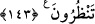
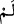

Hiç çalışmadan ücret beklemek, ücretin ancak çalışana verileceğini bilen kişilerden
beklenemez. Hiç çalışmadan ücret beklemek, aklen de çok uzak bir şeydir.
Âyetteki “Allah’ın belli etmemesi”nden maksat, bilinen şeyin henüz mevcut
olmadığını kinâye yoluyla ifade etmektir. “Henüz cihad etmediğiniz halde...” demektir.
Çünkü bir şeyin meydana gelmesi, Allah tarafından biliniyor olmasını gerektirir.
Lâzımın olmayışı, melzûmun bulunmamasını gerektirir. Böylece, daha kuvvetli ve
mübâlağalı olsun diye “Allah’ın belli etmemesi”, müslümanların cihâdının yapılmadığı
menzilesine indirilmiş olmaktadır. Çünkü “lâzım” cihâdın olmaması, melzûm Allah’ın
ilminde bulunmadığına delîldir.
Burada ayrıca, Allah’ın eşyâyı olduğu gibi bilmesinin zarûrî olduğuna temas
edilmektedir. Araplar: “Allah’ın ilminde filanca hakkında hayır bilgisi yoktur.” derler
ve bununla, “falancada hayır yoktur ki Allah bilsin” demek isterler.
Olumsuzluk edatı olan ( ) yine bir olumsuzluk edatı olan (  ) mânasındadır. Şu
kadar var ki; ( )’da olayın vukû bulacağına dâir bir beklenti bulunmaktadır. Böylece,
âyetteki ( ) cihâdın mâzide olmadığını, ama ileride olabileceğini göstermiş oluyor.
Meselâ: “Bana şöyle yapacağına dâir söz verdi, ama henüz yapmadı” dediğin zaman,
“yapmadı, ama yapacağını umuyorum” demiş olursun.
“Sabredenleri bilmeden” anlamına gelen cümlenin başındaki “vav” iki durumun da
olması gerektiğini bildiren vav-ı cem’dir. Âyetin mânası şöyle olur: “Şiddetli
durumlara sabır ve cihâdı gerçekleştiremediğiniz halde, cennete gireceğinizi mi
sandınız?” Yani “bu iki durumu aynı anda yapamadığınız halde...” demektir. Sizden
önce, yara ve darbelerin verdiği elemlere sabredip canlarını fedâ ederek öldürülenler
cennete girdiği gibi, siz de onların yoluna girip onlar gibi sabretmedikçe cennete
girmeyi aklınızdan çıkarın.
İnsanın, çalışıp tâatta bulunmadan cennete ve saâdete ulaşması çok uzak bir ihtimâldir.
143. Andolsun ki siz, ölümle yüzyüze gelmezden önce onu temennî ederdiniz. İşte
şimdi onu karşınızda gördünüz.
Âyetteki ölümden maksat; ya savaştır, çünkü savaş ölümün öncüsüdür veya şehid
olarak ölmektir. Buna göre âyetin mânası şöyledir:
“Andolsun ki siz, ölümle karşılaşmadan” ölümü müşâhede edip korku ve şiddetini
görmeden önce, onu; yani savaşı ya da şehid olarak ölmeyi “arzuluyordunuz.” Burada
Bedir savaşına katılamayanlara hitap edilmektedir. Bu mü’minler, Bedir şehidlerinin
ulaştığı üstün dereceye ulaşabilmek için, Hz. Peygamber (s.a.)’le birlikte savaşıp
şehâdet mertebesine ulaşmayı arzulamışlar ve (Uhud savaşı yaklaşınca) Hz.